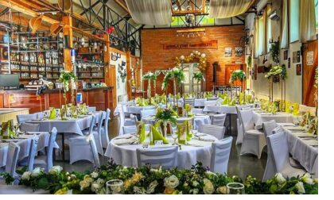

Vaše „áno" pod holým nebom
Romantický obrad na lúke pod slavobránou, slávnostná tabuľa v rustikálnej sále a vlastná kuchyňa — svadbu vám pripravíme od A po Z, 20 km od Košíc. Stačí povedať áno, o zvyšok sa postaráme my.
Jeden deň, na ktorý sa nezabúda
Stodola Staré časy je rodinný priestor s dušou — kombinácia rustikálneho šarmu a moderného pohodlia. Obrad zvládneme vonku na lúke aj v sále, hostinu pripravíme z čerstvých surovín a o výzdobu, obsluhu i cake bar sa postaráme my. Vy si tak môžete naplno užiť svoj veľký deň.
Pozrieť svadobné menu
Všetko pod jednou strechou
- Obrad na lúke pod slavobránou s červeným kobercom
- Slávnostná tabuľa a zasadací poriadok podľa vás
- Menu na mieru z vlastnej kuchyne (výmena mäsa aj príloh)
- Kompletná výzdoba — od základnej po deluxe
- Cake bar, candy bar a káva grátis ku každému menu
- Pódium pre kapelu či DJ a tanečný parket
- Open bar (nealko) a slávnostné prípitky
- Parkovanie, detský kútik a ubytovanie v okolí po dohode
Miesto pre malú aj veľkú svadbu

Hlavná sála
Priestranná sála s tanečným parketom a pódiom pre kapelu či DJ.

Lúka na obrad
Slavobrána, stoličky pre hostí a červený koberec pod holým nebom.
Dvor & terasa
Altánky, krytá terasa a priestor na večerný raut či ohňostroj.
Balíčky výzdoby
Vyberte si úroveň — alebo nám nechajte voľnú ruku a poradíme.
Základný
- Obrusy a stolová výzdoba
- Kvetinová dekorácia stolov
- Menovky a zasadací poriadok
Deluxe
- Prémiová kvetinová výzdoba
- Dekorácia obradu aj sály
- Cake bar a sweet kútik
- Drapérie a detaily na mieru
Doplnky
- Svetelná zástena — 95 €
- Slavobrána / obrad na lúke — 250 €
- Open bar (nealko) — 10 €/os.
- Prípitky — 2 €/ks
Dobré vedieť: Po 23:00 sa účtuje príplatok 10 €/začatú hodinu na jedného čašníka. Ceny sú orientačné — radi pripravíme ponuku na mieru.
Odporúčané svadobné menu
Svadby u nás

{kind=link}
Mali sme tu svadbu a bol to splnený sen — výzdoba aj jedlo nad očakávania. Personál sa postaral o každý detail.
Čo sa pýtajú páry
Koľko hostí sa k vám zmestí?
Hlavná sála pojme do 80 hostí, komornejší salónik do 30. Pre obrad na lúke prispôsobíme počet stoličiek podľa vašej svadby.
Dá sa u vás konať aj samotný obrad?
Áno. Civilný aj symbolický obrad zvládneme vonku na lúke pod slavobránou alebo v sále. Slavobrána s obradom na lúke vyjde od 250 € (stoličky do 20 ks, červený koberec, stôl pre oddávajúcich).
Môžeme si priniesť vlastnú tortu alebo alkohol?
Tortu a zákusky si priniesť môžete. Pri nápojoch a alkohole sa vždy dohodneme individuálne — radi poradíme s open barom aj prípitkami.
Ako si rezervujeme termín?
Vyplňte nezáväzný formulár alebo nám zavolajte na 0904 942 936. Ozveme sa do 24 hodín s voľnými termínmi a cenovou ponukou na mieru.
Je v okolí možnosť ubytovania?
Áno, v okolí Trsteného pri Hornáde a smerom na Košice je viacero ubytovaní. Radi vám odporučíme overené možnosti pre vašich hostí.